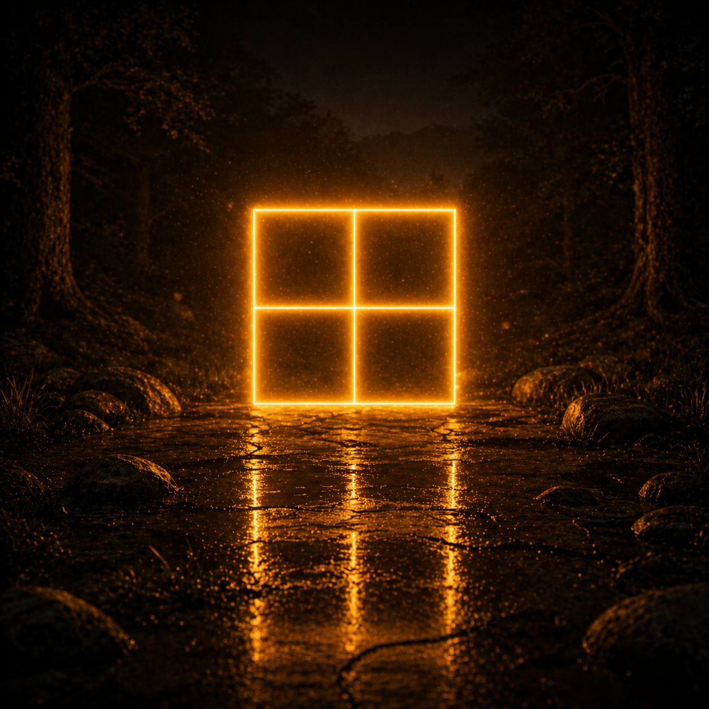

いし
ishi.
stone
Beginner pathway
Look into the picture.
Look
Look into the scene.
いし
ishi.
stone
いしを こえ
Ishi o koe.
over the stones
See the を?
You do not need to know yet what happened to the stone.
You spotted the little signal: something is happening with the stone.
That is plenty. Keep going.
いしを こえ
Ishi o koe.
over the stones

あさひ
asahi.
morning sun
あさひを うつし
Asahi o utsushi.
Reflecting the morning sun.
Watch & Listen
The same room, performed quietly.
Look how far you have come.
You have not learned everything here. You are not meant to. See what you recognize.

方眼の田が 朝日を映し
You can already see some of it.